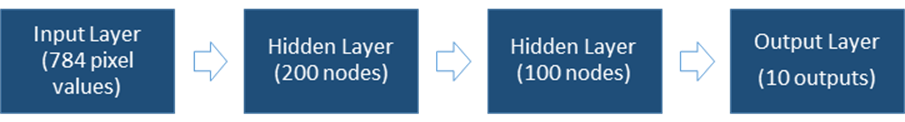
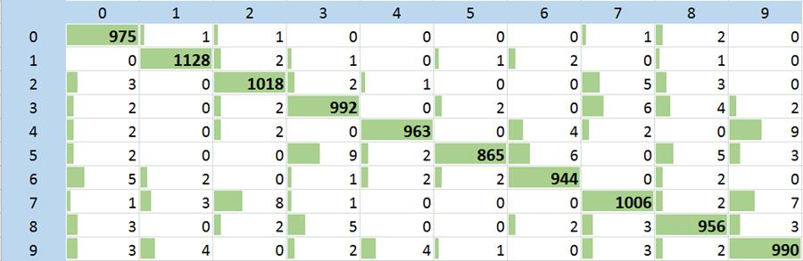

Handwritten Digit Recognition
-Devendra Pratap Yadav
Implementing Neural Network using Theano and SciKit-learn in Python.
Neural Network architecture

Parameters used
The following parameters were determined after experimentation:
1. Learning rate = 0.01
2. Learning Momentum = 0.7
3. Number of Batches (created using complete dataset) : 10
4. Dropout rate = 0.3
Termination
takes place after 100 iterations or 10 stable iterations (no decrease in
error).
Training
on 47,500 and using 2,500 for validation.
Using the trained neural network, we test 10,000 samples from the MNIST dataset.
The program produces the following output:
Initializing neural network with 3 layers, 784 inputs and 10 outputs.
- Dense: Rectifier Units: 200
- Dense: Rectifier Units: 100
- Dense: Softmax Units: 10
Training on dataset of 50,000 samples with 39,700,000 total size.
- Train: 47,500 Valid: 2,500
- Using `dropout` for regularization.
- Terminating loop after 100 total iterations.
- Early termination after 10 stable iterations.
Epoch Training Error Validation Error Time
------------------------------------------------------------
1 8.181e-01 3.264e-01 20.4s
2 4.532e-01 2.461e-01 20.7s
3 3.661e-01 1.964e-01 20.2s
4 3.204e-01 1.717e-01 22.7s
5 2.924e-01 1.523e-01 20.6s
6 2.651e-01 1.367e-01 23.3s
7 2.465e-01 1.249e-01 20.3s
8 2.282e-01 1.168e-01 21.8s
9 2.204e-01 1.109e-01 20.7s
10 2.069e-01 1.016e-01 21.4s
15 1.645e-01 8.494e-02 18.8s
20 1.431e-01 7.522e-02 21.5s
25 1.289e-01 6.669e-02 22.8s
30 1.161e-01 6.214e-02 25.5s
35 1.065e-01 6.050e-02 19.1s
40 9.664e-02 5.714e-02 19.0s
45 9.308e-02 5.369e-02 19.0s
50 8.949e-02 5.219e-02 20.9s
55 8.076e-02 4.973e-02 20.9s
60 7.681e-02 4.782e-02 18.7s
65 7.470e-02 4.874e-02 20.4s
70 7.203e-02 4.775e-02 19.5s
75 6.948e-02 4.511e-02 19.1s
80 6.710e-02 4.635e-02 19.3s
85 6.462e-02 4.515e-02 20.3s
86 6.231e-02 4.488e-02 18.3s
87 6.196e-02 4.608e-02 21.3s
88 6.260e-02 4.528e-02 21.3s
Early termination condition fired at 88 iterations.
[(10000, 10)]
0.9837
[(10000, 10)]
Report:
precision recall f1-score support
0 0.98 0.99 0.99 980
1 0.99 0.99 0.99 1135
2 0.98 0.99 0.99 1032
3 0.98 0.98 0.98 1010
4 0.99 0.98 0.99 982
5 0.99 0.97 0.98 892
6 0.99 0.99 0.99 958
7 0.98 0.98 0.98 1028
8 0.98 0.98 0.98 974
9 0.98 0.98 0.98 1009
avg / total 0.98 0.98 0.98 10000
We obtain 98.3 % accuracy on the test set.
The confusion matrix for the above result is:

We achieve good results for all digits using our neural network.